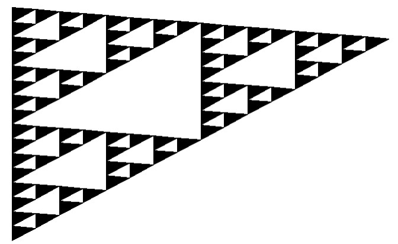

remotes::install_github("ElieCht/heron")Librairie Heron
Ce package permet de calculer l’aire d’un triangle à partir de la longueur de ses 3 côtés grâce à la formule de héron
Il contient 3 fonctions :
Une fonction intermédiaire : demi-perimètre qui comme son nom l’indique, calcule le demi-perimètre du triangle
Une fonction heron qui permet de calculer l’aire d’un triangle grâce à la forume sur l’image ci-dessus
Une fonction heron_bis, qui permet de calculer l’aire du triangle en renvoyant des erreurs si certaines caractéristiques ne sont pas respectées
Pour installer le package depuis Github, il suffit d’installer la librarie “remotes” et d’éxecuter la commande suivante :
Triangle de Sierpinski
Le triangle de Sierpink (ou tamis de Sierpinski) est une figure fractale formée d’un grand triangle équilatéral subdivisé en petits triangles équilaéraux plus petits.
Chaque étape de la subdivision consiste à retirer le triangle central de chaque petit triangle équilatéral et à le remplacer par trois trianglais équilatéraux plus petits, créant ainsi une série infinie de triagnles imbriqués de plus en plus petits.
Les étapes du triangle de Sierpinski sont les suivantes :
1 : Commencer avec un triangle équilatéral
2 : Diviser le trangle en quatre triangle équilatéraux en traçant des lignes reliant le mileu de chaque côté
3 : Supprimer le trangle central de chaque petit triangle équilatéral crée à l’étape précedente
4 : Répeter les étapes 2 et 3 pour chacun des triangles restants à chaque itérations
Première Itération
#tar_read("plot1")
#paste("L'aire du triangle à la première étape est", tar_read("aire1"))Seconde Itération
#tar_read("plot2")
#paste("L'aire du triangle à la deuxième étape est", tar_read("aire2"))Troisième Itération
#tar_read("plot3")
#paste("L'aire du triangle à la troisième étape est", tar_read("aire3"))Quatrième Itération
#tar_read("plot4")
#paste("L'aire du triangle à la quatrième étape est", tar_read("aire4"))
Conclusion
Nous constatons bien qu’au cours du procéssus itératif, les aires des triangles diminuent au cours des étapes.La raison est qu’à chaque itération, chaque triangle est réduit de moitié ce qui signifie que l’aire totale des triangles diminue. L’aire de chaque triangle est divisée par quatre, par conséquent, l’aire des triangles dans le triangle de Siperpinski tend vers 0 à mesure que le nombre d’itérations augmente.